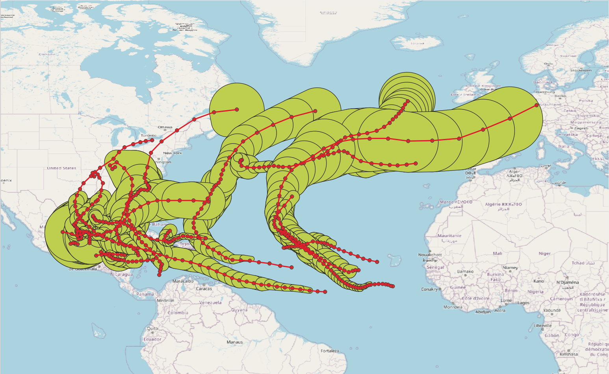

Tabla de contenidos
Un tipo de búfer circular estático cbuffer representa un punto 2D y un radio mayor o igual que 0 alrededor del punto. El radio representa el «impacto» del punto sobre su entorno. Este impacto puede interpretarse como ruido, contaminación o aspectos similares según los requisitos de la aplicación.
El tipo cbuffer sirve como tipo base para definir el tipo de búfer circular temporal tcbuffer. El tipo tcbuffer tiene una funcionalidad similar al tipo de punto temporal tgeompoint con la excepción de que solo considera dos dimensiones. Por lo tanto, la mayoría de las funciones y operadores descritos anteriormente para el tipo tgeompoint también son aplicables para el tipo tcbuffer. Además, hay funciones específicas definidas para el tipo tcbuffer.
La Figura 13.1, “Ilustración del uso del tipo tcbuffer para modelar el búfer circular alrededor de la franja de viento de las tormentas tropicales en 2024.” ilustra el uso del tipo tcbuffer para modelar el búfer circular alrededor de la franja de viento de las tormentas tropicales en 2024. Los datos se obtienen de la National Oceanic and Atmospherique Administration (NOAA). Como se ilustra en la figura, los tipos tgeompoint y tcbuffer permiten la interpolación lineal, mientras que, como hemos visto en la Figura 7.2, “Ilustración del uso de los tipos tgeompoint (arriba) y tgeometry (abajo) para modelizar la trayectoria y la franja de viento de las tormentas tropicales en 2024.”, el tipo tgeometry solo permite la interpolación escalonada.
Figura 13.1. Ilustración del uso del tipo tcbuffer para modelar el búfer circular alrededor de la franja de viento de las tormentas tropicales en 2024.

Un valor cbuffer es un par de la forma (point,radius) donde point es un punto geométrico y radius es un valor float mayor o igual que cero que representa un radio alrededor del punto expresado utilizando las unidades del SRID del punto. Ejemplos de entrada de valores de búfer circular son los siguientes:
SELECT cbuffer 'Cbuffer(Point(1 1), 0.3)'; SELECT cbuffer 'Cbuffer(Point(1 1), 10.0)';
El tipo cbuffer corresponde al resultado de la función de PostGIS ST_MinimumBoundingRadius.
Los valores del tipo de búfer circular deben satisfacer varias restricciones para que estén bien definidos. Ejemplos de valores incorrectos del tipo de búfer circular son los siguientes.
-- valor de punto incorrecto SELECT cbuffer 'Cbuffer(Linestring(1 1,2 2), 1.0)'; -- punto 3D incorrecto SELECT cbuffer 'Cbuffer(Point Z(1 1 1), 1.0)'; -- valor de radio incorrecto SELECT cbuffer 'Cbuffer(Point(1 1), -2.0)';
A continuación damos las funciones y operadores para el tipo de búfer circular.
Los valores del tipo cbuffer se pueden convertir al tipo geometry utilizando un CAST explícito o utilizando la notación :: como se muestra a continuación. De manera similar, una geometry se puede convertir a un valor cbuffer utilizando la función ST_MinimumBoundingRadius de PostGIS.
Convertir entre un búfer circular y una geometría
geometry::cbuffer
cbuffer::geometry
SELECT ST_AsText(cbuffer(ST_Point(1,1), 1)::geometry); -- CURVEPOLYGON(CIRCULARSTRING(0 1,2 1,0 1)) SELECT asText(geometry 'SRID=5676;CIRCULARSTRING(0 1,2 1,0 1)'::cbuffer); -- Cbuffer(POINT(1 1),1) SELECT asText(geometry 'SRID=5676;LINESTRING(0 0,2 2)'::cbuffer); -- Cbuffer(POINT(1 1),1.414213562373095)
Convertir un búfer circular y, opcionalmente, una marca de tiempo o un período, a un cuadro espaciotemporal
stbox(cbuffer) → stbox
stbox(cbuffer,{timestamptz,tstzspan}) → stbox
SELECT stbox(cbuffer 'SRID=5676;Cbuffer(Point(1 1),0.3)'); -- SRID=5676;STBOX X((0.7,0.7),(1.3,1.3)) SELECT stbox(cbuffer 'Cbuffer(Point(1 1),0.3)', timestamptz '2001-01-01'); -- STBOX XT(((0.7,0.7),(1.3,1.3)),[2001-01-01, 2001-01-01]) SELECT stbox(cbuffer 'Cbuffer(Point(1 1),0.3)', tstzspan '[2001-01-01,2001-01-02]'); -- STBOX XT(((0.7,0.7),(1.3,1.3)),[2001-01-01, 2001-01-02])
Devuelve o establece el identificador de referencia espacial
SRID(cbuffer) → integer
setSRID(cbuffer) → cbuffer
SELECT SRID(cbuffer 'Cbuffer(SRID=5676;Point(1 1), 0.3)'); -- 5676 SELECT asEWKT(setSRID(cbuffer 'Cbuffer(Point(0 0),1)', 4326)); -- SRID=4326;Cbuffer(POINT(0 0),1)
Transformar a una referencia espacial diferente
transform(cbuffer,integer) → cbuffer
transformPipeline(cbuffer,pipeline text,to_srid integer,is_forward bool=true) →
cbuffer
La función transform especifica la transformación con un SRID de destino. Se genera un error cuando el búfer circular de entrada tiene un SRID desconocido (representado por 0).
La función transformPipeline especifica la transformación con una canalización de transformación de coordenadas definida representada con el siguiente formato de cadena:
urn:ogc:def:coordinateOperation:AUTHORITY::CODE
El SRID del búfer circular de entrada se ignora y el SRID del búfer circular de salida se establecerá en cero a menos que se proporcione un valor a través del parámetro opcional to_srid. Como se indica en el último parámetro, la canalización se ejecuta de forma predeterminada en dirección hacia adelante; al establecer el parámetro en falso, la canalización se ejecuta en la dirección inversa.
SELECT asEWKT(transform(cbuffer 'SRID=4326;Cbuffer(Point(4.35 50.85),1)', 3812)); -- SRID=3812;Cbuffer(POINT(648679.0180353033 671067.0556381135),1)
WITH test(cbuffer, pipeline) AS (
SELECT cbuffer 'Cbuffer(SRID=4326;Point(4.3525 50.846667),1)',
text 'urn:ogc:def:coordinateOperation:EPSG::16031' )
SELECT asEWKT(transformPipeline(transformPipeline(cbuffer, pipeline, 4326), pipeline,
4326, false), 6)
FROM test;
-- SRID=4326;Cbuffer(POINT(4.3525 50.846667),1)
Los operadores de comparación (=, < y así sucesivamente) están disponibles para búferes circulares. Comparan primero los puntos y luego el radio de los argumentos. Excepto la igualdad y la desigualdad, los otros operadores de comparación no son útiles en el mundo real pero permiten que los índices de árbol B se construyan en búferes circulares.
Comparaciones tradicionales
cbuffer {=, <>, <, >, <=, >=} cbuffer
SELECT cbuffer 'Cbuffer(Point(3 3), 0.5)' = cbuffer 'Cbuffer(Point(3 3), 0.5)'; -- true SELECT cbuffer 'Cbuffer(Point(3 3), 0.5)' <> cbuffer 'Cbuffer(Point(3 3), 0.6)'; -- true SELECT cbuffer 'Cbuffer(Point(3 3), 0.5)' < cbuffer 'Cbuffer(Point(3 3), 0.6)'; -- true SELECT cbuffer 'Cbuffer(Point(3 3), 0.6)' > cbuffer 'Cbuffer(Point(2 2), 0.6)'; -- true SELECT cbuffer 'Cbuffer(Point(1 1), 0.5)' <= cbuffer 'Cbuffer(Point(2 2), 0.5)'; -- true SELECT cbuffer 'Cbuffer(Point(1 1), 0.6)' >= cbuffer 'Cbuffer(Point(1 1), 0.5)'; -- true